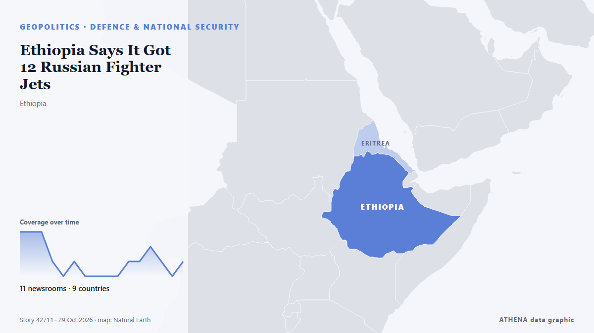

Ethiopia Says It Got 12 Russian Fighter Jets

Prime Minister Abiy Ahmed says Ethiopia received 12 Su-35 fighters from Russia on 28 October. de The Rio Times
Relayé de façon indépendante par 11 médias dans 9 pays depuis le 28 oct. ; premier à l'annoncer : Fana Broadcasting Corporate ; la couverture faiblit. ATHENA juge le risque modéré (3.0/10), surtout en raison de la gravité des dommages décrits et de la qualité des preuves. La confiance est de 92 % (élevée) : 11 médias indépendants le confirment, avec une fiabilité moyenne des sources de 77 %.
Pourquoi c'est important: Les évolutions de sécurité et de diplomatie peuvent déplacer alliances, échanges et marchés bien au-delà des pays directement concernés.
Ce qui a changé : 7 nouveaux articles de 7 rédactions dans les 24 heures jusqu'au 29 oct..
Premier titre : Ethiopia receives 12 Russian fighter jets
Les titres sont affichés en anglais, tels que publiés.
En un coup d'œil
Sélectionné, noté et rédigé par la méthodologie publiée d'ATHENA. Aucun rédacteur n'intervient sur un événement en particulier. Comment il est produit ›
| 28 Oct 10:42 UTC | 3 |
|---|---|
| 28 Oct 12:42 UTC | 3 |
| 28 Oct 14:42 UTC | 3 |
| 28 Oct 16:42 UTC | 1 |
| 28 Oct 18:42 UTC | 0 |
| 28 Oct 20:42 UTC | 1 |
| 28 Oct 22:42 UTC | 0 |
| 29 Oct 00:42 UTC | 0 |
| 29 Oct 02:42 UTC | 0 |
| 29 Oct 04:42 UTC | 0 |
| 29 Oct 06:42 UTC | 1 |
| 29 Oct 08:42 UTC | 1 |
| 29 Oct 10:42 UTC | 2 |
| 29 Oct 12:42 UTC | 1 |
| 29 Oct 14:42 UTC | 0 |
| 29 Oct 16:42 UTC | 1 |
| 28 Oct 12:21 UTC | 0.0 |
|---|---|
| 28 Oct 16:43 UTC | 2.0 |
| 28 Oct 18:18 UTC | 2.5 |
| 29 Oct 09:15 UTC | 3.5 |
| 29 Oct 18:40 UTC | 3.0 |
Pourquoi ces chiffres
Importance
Risque
Confiance
La couverture : qui l'a annoncé, et quand
titre tel que publié · ouvre l'original- Fana Broadcasting Corporate · Éthiopie · EthiopiaPM Abiy Ahmed Witnesses Official Handover of 12 Su-35 Fighter Jets to Ethiopia Under Russia Defence Agreement
- TASS (English) · Russie · RussiaEthiopia expects to receive four S-400 air defense system batteries from Russia — PM
- The Straits Times · Singapour · SingaporeEthiopia says it has taken delivery of 12 Russian Su-35 fighter jets
- TASS (English) · Russie · RussiaEthiopia receives 12 Su-35 fighter jets from Russia — premier
- Fana Broadcasting Corporate · Éthiopie · EthiopiaPM Abiy Ahmed’s Medemer Book Launched in Russian, Expanding Ethiopia’s Global Intellectual Reach
- Fana Broadcasting Corporate · Éthiopie · EthiopiaPM Abiy Ahmed: Ethiopia’s Defence Preparedness Will Deter Aggression and Safeguard National Sovereignty
- Punch · NigeriaEthiopia receives 12 Russian fighter jets
- The Moscow Times · Russie · RussiaEthiopia Receives 12 Russian Su-35 Fighter Jets
- Al Jazeera English · QatarEthiopia receives 12 Russian Su-35 jets, plans S-400 acquisition
- Anadolu Agency (English) · Turquie · TurkeyEthiopia receives 12 Russian Su-35 fighter jets, plans to acquire S-400 air defenses
- TASS (English) · Russie · RussiaRussia appreciates friendly relations with Ethiopia, Putin says
- BBC News · Royaume-Uni · United KingdomEthiopia acquires Russian fighter jets and air defence systems amid war in Tigray
- Fana Broadcasting Corporate · Éthiopie · EthiopiaPM Abiy Says Medemer Offers the World Insights from Ethiopia’s Centuries-Old Indigenous Knowledge
- Premium Times · NigeriaEthiopia receives Russian fighter jets, air defence systems
- Al Jazeera English · QatarWhy is Russia sending fighter jets and air defences to Ethiopia?
- The Africa Report · FranceEthiopia’s Russian fighter jets raise stakes in Eritrea standoff
- The Rio Times · Brésil · BrazilEthiopia Says It Got 12 Russian Fighter Jets